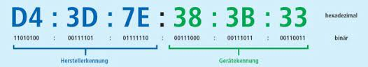

Teil 1:
Gib die Dualdarstellung der Ziffern des Hexadezimalsystems an. Bestimme die Anzahl der Dualstellen, die zur Darstellung maximal benötigt werden. Kodiere mithilfe der erstellten Tabelle die folgenden Zahlen.
Teil 2:
Für eine Webseite wurden folgende Farben ausgewählt. Die Angabe der Farben erfolgt im Hexadezimalsystem.
Hier stand eine Abbildung, deren Nutzungsrechte für die Webseite nicht geklärt sind.
#7D8E95).Teil 3:
In der Netzwerktechnik spielen MAC-Adressen eine wichtige Rolle.

Teil 1:
Bestimme die größte Zahl, die sich mit 4 Ziffern im Binär- und im Hexadezimalsystem ergibt.
Teil 2:
In welchem Zahlensystem stellt die folgende Gleichung eine wahre Aussage dar?
42 + 242 = 16²
Teil 3:
Konvertiere die Dezimalzahlen 1387 und 4123 in eine Binärzahl und eine Hexadezimalzahl. Formuliere eine allgemeine Regel zur Konvertierung in ein beliebiges Stellenwertsystem.
Berechne die folgenden Additionen schriftlich im Binärsystem. Notiere die Überträge und führe jeweils die Probe im Dezimalsystem durch.
5. Bei welchen der vier Aufgaben braucht das Ergebnis mehr Stellen als die beiden Summanden? Erkläre, was das für ein Register mit fester Bitbreite bedeuten würde.
Bisher wurden immer zwei Binärzahlen addiert. Bei mehr Summanden kann in einer Spalte eine Summe größer als 3 entstehen.
Eine Woche hat 7 Tage. Deshalb bietet sich für Zeiträume in Tagen das Siebenersystem (Basis 7, Ziffern 0 bis 6) an.
Tipp: Die Stellenwerte im Siebenersystem sind 1, 7, 49, 343, 2401, …
Für Zahlensysteme mit fremder Basis gibt es auf dem Taschenrechner keine Taste. Du musst das Verfahren selbst beherrschen.